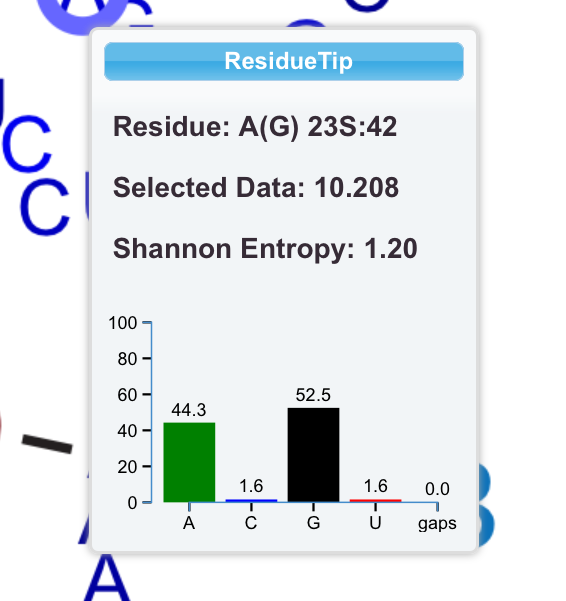
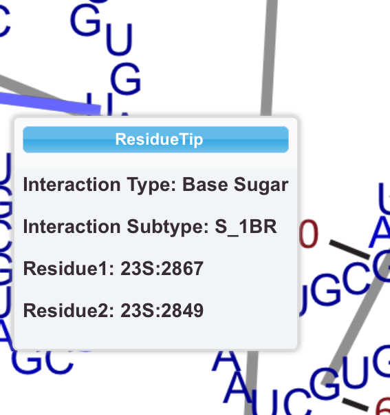

Additional information about a nucleotide is displayed, by hovering the mouse over it. This feature is called ResidueTip. We will use 23S:42 as an example. In addition to seeing the nucleotide number, 23S:42 on the first line, there is also the sequence A, and the consensus sequence in parentheses, G. Selected Data means the data associated with the selected layer. In this case, we loaded B Factors, so 10.208 is the B factor of 23S:42. The Shannon Entropy at this position is 1.20. The graph is the composition of this position. 23S:42 is usually an A or a G. We will improve this feature furthur.
Interactions (lines) also have ResidueTips. To activate this feature, hold the Alt key down while hovering over a line. In this example, we see that the line is representing a Base-Sugar interactions. It has subtype S_1BR, which refers to the geometry of the interaction. The interaction is between nucleotides 23S:2867 and 23S:2849.
This feature can be disabled in the RiboVision Settings menu.